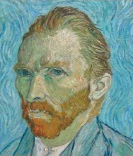

En büyük Hollandalı sanatçılardan biri olan Vincent Van Gogh (1853-1890), acı çekmiş ve yanlış anlaşılmış dehanın sembolü oldu. Tüm ömrü boyunca sadece bir resim satmasına rağmen, şimdi eserleri bir servet değerindedir.

Protestan bir rahibin oğlu olan Van Gogh, Hollanda’da Zundert’te doğdu. 1869 yılıyla beraber ilk önce Lahey’de, sonra Londra’da sanat tüccarları Goupil & Company’i temsil ediyordu. İş dünyasında başarısız olan Van Gogh, rahiplik eğitimi almak üzere 1875’te şirketi bıraktı. Güneybatı Belçika’daki madencilere kısa müddet vaaz vererek çalıştı, ama tüm varlığını dağıttıktan sonra ruhban sınıfından kovuldu. Daha yüksek makamdakiler, Hıristiyan öğretilerini son derece harfiyen yerine getirmesinden endişe etmişlerdi. Van Gogh, 1880 ile 1890 yılları arasında sadece on yıl bir sanatçı olarak aktifti. Baskıları kopyalamaktan, kitap okumaktan resim yapmayı kendi kendine öğrendi. Konusu ve tekniği açısından Fransız ressam Jean-François Millet’e (1814-1875) çok şey borçlu olduğu Patates Yiyenler (1885) adlı bir eserinde açıkça görüldüğü gibi gerçekçi ressamlardan etkilendi.
1886’da Van Gogh, hayatının çoğunda onu destekleyen, bir sanat tüccarı olan kardeşi Theo ile meteliği bölüştüğü Paris’e gitmek için Hollanda’yı terk etti. Van Gogh’un Claude Monet, Paul Gaugin, Camille Pissarro ve Georges Seurat ile tanışması Theo yoluyla oldu. Zamanının pek çok sanatçısı gibi, Japon baskılarına ilgi gösterdi. Yoğun sanatsal faaliyetle geçen iki yıldan sonra Van Gogh, köylüleri resmetmek amacıyla Fransa’nın güneyindeki Arles’e taşındı. Ekim 1888’de Gaugin’i kendisine katılmaya davet etti. Aynı yılın Noel gecesinde iki sanatçı birbirine girdi ve Van Gogh kendi kulağını kesti. Bir gazete yazısına göre, onu bir fahişeye sundu. Olay, muhtemelen saranın bir şekli olan akıl hastalığının ilk işaretiydi.
1889 Mayıs ayıyla beraber Van Gogh, kendisini Saint-Remy’deki psikiyatri kliniğine yatırdı. O yıl belki de en ünlü eseri olan Yıldızlı Gece resmini yaptı. On iki ay sonra, Paris yakınlarındaki homeopati doktoru Paul-Ferdinand Gachet’nin evine taşındı. Ciddi şekilde depresif olan Van Gogh, Temmuz 1890’da kendisini göğsünden vurdu ve iki gün sonra öldü. Ölümünden sonra Van Gogh’un ünü hızla yükseldi. 1901’de eserlerinin bir sergisi, resimlerinin yetmiş bir tanesine ev sahipliği yaptı. 1987’de İrisler resmi 47 milyon sterline satıldı. Üç yıl sonra Doktor Gachet’nin Portresi rekor kırarak 82.5 milyon dolara alındı. Bugün Van Gogh’un, en büyük tek koleksiyonu Amsterdam’daki Van Gogh Müzesi’nde olup, 1.250 resmi ve 1.000 eskizi dünya geneline yayılmıştır.
EK BİLGİLER:
1. Van Gogh’un manidar görünen son sözleri “Mutsuzluk, sonsuza dek sürecektir.” oldu.
2. Bazı uzmanlar, Van Gogh’un manik-depresyondan muzdarip olduğuna inanırlarken, diğerleri akıl hastalığının aşırı apsent tüketiminden kaynaklandığını iddia ettiler. Halen diğer bazı uzmanlar, onun kendi boyalarından çok fazlasının tadına baktığını söylerler.